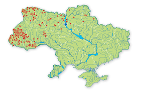
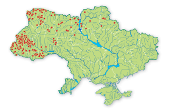

Червона книга України |
Охороняй! |
|
Меню
 

|
Таксономічна належність: Клас — Птахи (Aves), ряд — Лелекопо-дібні (Ciconiiformes), родина — Лелекові (Ciconiidae). Один з 5-ти видів роду; один з 2 -х видів роду у фауні України. Природоохоронний статус виду: Рідкісний. Ареал виду та його поширення в україні: Лісова смуга Центральної, Сх. і частково Пд. Європи, а також Азія і Пд. Африка; зимівля пд. Сахари і у Пд. Азії. В Україні гніздиться на Поліссі, в Карпатському р-ні, подекуди на пн. Лісостепу: на початку ХХІ ст. ареал значною мірою відновився. Чисельність і причини її зміни: По Україні чисельність досягає 400–450 пар. У Волинській обл. 50–60 пар, Рівненській — 60–70, Львівській — 30–40, Закарпатській — 30–40, Івано-Франківській — 30–40, Чернівецькій — 8–10, Київській — 25–30, Чернігівській — 40–50, Сумській — 10–12. Чисельність у Європі сягає 7,8–12 тис. пар з тенденцію до зростання. При-чини зміни чисельності: деградація місць гніз-дування через вирубування лісів, меліорація лісових угідь у смузі Лісостепу, фактор непокою. Особливості біології та наукове значення: Оселяється в старих лісах поблизу водойм і боліт, у період міграцій трапляється на луках, пасовищах, полях поряд з водоймами. Прилі-тає наприкінці березня — у квітні. Гніздиться окремими парами. Гнізда на деревах у розга-луженні головного стовбура або на великих бічних гілках на висоті 3–20 м. Відкладання яєць у травні. У повній кладці 2–6 яєць, найчас-тіше — 4. Насиджують кладку самка і самець, протягом 32–34 днів. У виводку 1–5 пташенят. Пташенята починають літати у віці біля 2-х мі-сяців. Статева зрілість наступає у віці 3 років. Відліт у серпні–жовтні. Мігрує вдень, широким фронтом. Навесні мігрує переважно поодин-ці, восени — також групами по 4–20 ос., на пд. країни зграями до 40 ос. Живиться рибою, земноводними, водяними комахами; інколи здобуває плазунів і мишоподібних гризунів. Морфологічні ознаки: Маса тіла — близько 3 кг, довжина тіла — 95–100 см, розмах крил — 185–205 см. У дорос-лого птаха груди, черево і підхвістя білі, реш-та оперення чорна з металічним полиском; гола шкіра навколо очей, вуздечка, дзьоб і ноги червоні. У молодого птаха чорний ко-лір з бурим відтінком; гола шкіра навколо очей, вуздечка, дзьоб і ноги оливково-бурі. Режим збереження популяцій та заходи з охорони: Занесений у Додаток ІІ Бернської конвенції, Додаток ІІ Боннської конвенції, Додаток угоди AEWA, до категорії ІІІ Переліку видів фауни Європи, що підлягають особливій охороні (SPEC), у Додаток ІІ Конвенції CITES. Охороняється на заповідних територіях Полісся та Карпатсько-го р-ну. У місцях гніздування виду та регуляр-ного перебування під час міграцій необхідно створити природоохоронні об'єкти. Розмноження та розведення у спеціально створених умовах: Розмножується у зоопарках. Господарське та комерційне значення: Відомостей немає. Джерело: Смогоржевський, 1979; Головач, Грищенко, Серебря- ков, 1990; Гузий, 1990; Грищенко, Головач, Серебряков, Скільський, Савчук, 1992; Грищенко, 1994, 2002; Жила, 1994; Савчук, Новак, 1994; Фесенко, 1996; Беркіч, 1998; Борзаковский, 1998; Полюшкевич, 1998; |


Вигаданий текст |
(с) Я |
|